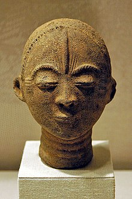

A web application that takes a user's birthday and calculates the day of the week they were born and then
depending on their gender outputs their Akan Name.

Akan names are derived from Ghanian culture. Frequently in Ghana, children are given their first name as a 'day
name' which corresponds to the day in the week they were born. Here are Ghanian day names.